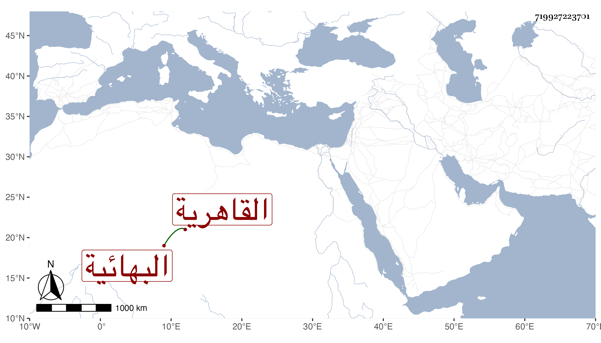

0902Sakhawi.DawLamic.ITO20230111-ara1.EIS1600.719927223701
Biography ID: 719927223701
558
فاطمة ابنة أبي بكر بن علي بن أبي بكر محمد بن عثمان أم عبد الكريم البلبيسية الاصل القاهرية البهائية أخت محمد وعلي وعبد القادر وجدة البدر السعدي الحنبلي لأمه ، كانت خيرة ملجأ لمن يستيعن بها من النساء ونحوهن لثقتها وخبرتها وزوجها كان كاتب العليق ثم بعده استقر فيها ثالث اخوتها ، وماتت عن سن عالية ممتعة بحواسها وقوتها في يوم الاربعاء سادس ذي الحجة سنة أربع وسبعين وصلى عليها من الغد بمصلى باب النصر ثم دفنت بتربة سعيد السعداء رحمها الله وإيانا .
